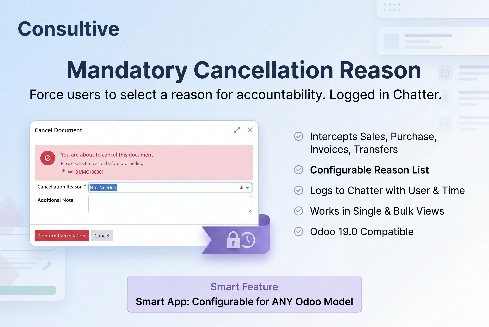
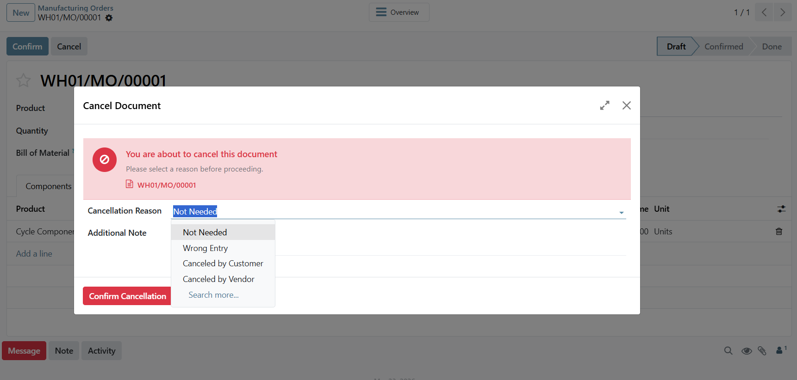
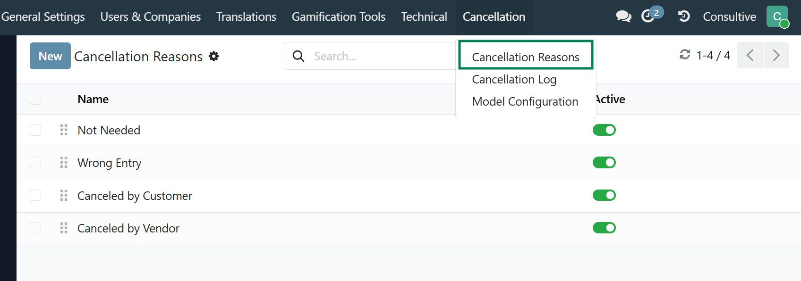
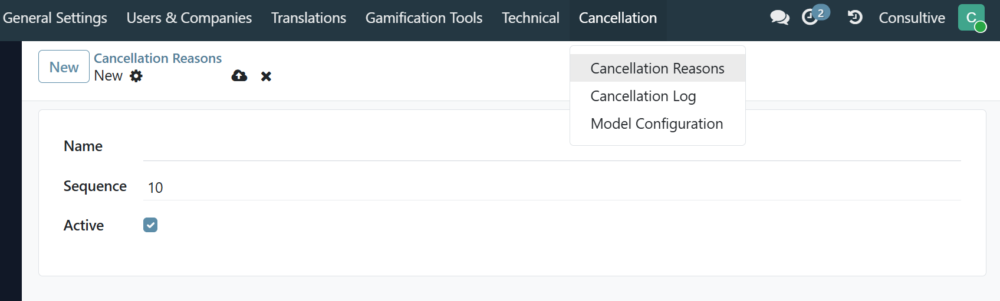
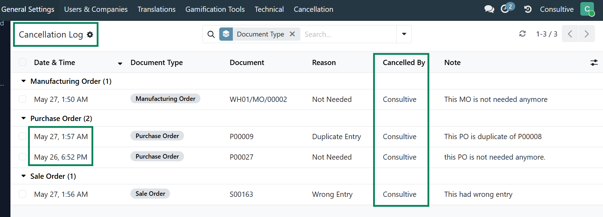
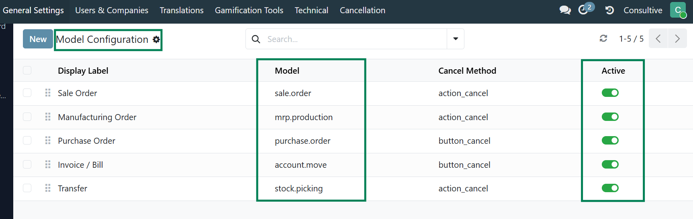
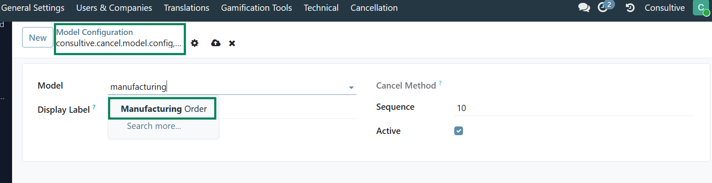

Out of the box, Odoo lets anyone cancel a Sale Order, Purchase Order, Invoice, or Transfer with a single click — no reason, no trace, no record. This module closes that gap. Every cancellation goes through a mandatory reason wizard. The reason is logged in the chatter with the user's name and timestamp, automatically — every single time.
The moment a user clicks Cancel on any configured document, the action is intercepted and the wizard opens. The document stays unchanged until a reason is chosen. Works on form views and list views, for single and bulk cancellations.

Cancel wizard intercepting a Manufacturing Order — reason is required before the document is cancelled.
Go to Settings → Cancellation → Cancellation Reasons and define the reasons that matter for your business. Drag to reorder the dropdown. Archive reasons that are no longer in use — historical log entries are never affected.

Reasons list — orderable via drag-and-drop, toggleable active state.

Creating a new reason — just a name and sequence number.
The Cancellation Log gives managers and auditors a single, searchable view across every document type — grouped by model, filtered by reason, user, or date range. Print it as a report or export it. Full accountability at a glance.

Cancellation Log grouped by document type — Date, Document, Reason, Cancelled By, and Note visible in one view.
The module ships pre-configured for Sale Orders, Purchase Orders, Invoices / Bills, and Warehouse Transfers. Need it on Manufacturing Orders? Or HR Leave Requests? Or any other model? Open Settings → Cancellation → Model Configuration, add a row, and the intercept is live — the cancel method is detected automatically, no restart required.

Model Configuration — all active models listed, with auto-detected cancel method.

Adding Manufacturing Order — type ahead to find any installed model.
We specialize in custom Odoo development, implementation, and business process consulting — building modules that solve real operational problems, thoroughly tested and ready for production.
| 🌐 consultive.io | | | ✉ contact@consultive.io | | | 📞 +880 1711 751571 |